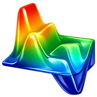

Professional Geophysical 2D/3D Subsurface Mapping Software
AnyScan209 transforms raw sensor data into real-time 3D visualization maps. Developed for geologists and exploration specialists.
AnyScan209 is an open-source geophysical utility designed for subsurface mapping and high-performance data visualization.
Contact: ssmqqmss@gmail.com